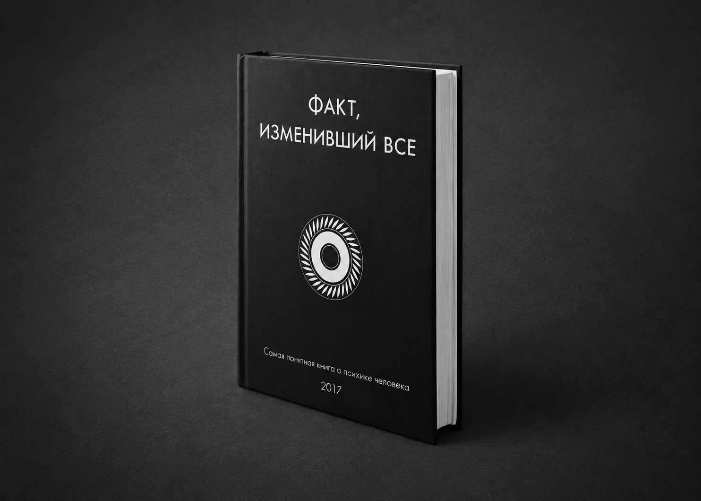

Электронная книга
Психолог
Обычно это долгосрочная терапия, каждую неделю или каждые две — это очень успешный формат, плюс очень экономный. Также можно провести ознакомительную консультацию, чтобы вы могли понять, как вам.
Работаю сейчас только дистанционно по любой удобной программе.
Оплата всегда до консультации, чем раньше, тем лучше.
Я могу записывать встречи, если вы захотите. Сам я без запроса запись не произвожу.
Работаю со всем спектром психических проблем. Специализируюсь на страхах, депрессии, подавленной агрессии и сексуальности.
Я считаю, что продуктивность психотерапии определяется в том числе амбициозностью целей, которые мы можем перед собой поставить. Эта статья написана, чтобы описать основные шаги для человека, которые он мог бы предпринять, чтобы наконец-то начать управлять своей судьбой или, по крайней мере, вылечить её.
Соцсети
Три разных форматаВК
Когда мы исследуем причины депрессии, мы часто обнаруживаем одиночество. Либо внутри семейной системы, и/либо внутри социума. Не каждое одиночество превращается в депрессию, но оно является её сильнейшим предиктором. Фундаментом, на который впоследствии накладываются другие причины.
Чтобы мы "как следует" хотели жить, нам очень нужно, чтобы нас любили. Нам очень важно, чтобы мы были нужны. Если семья не может сгенерировать это, можно поискать компенсацию за пределами семьи. Но если ни там, ни там не получилось обрести собственную ценность, нет ничего удивительного в том, что ощущение смысла делать что-либо и жить дальше, прикладывая усилия, угасает.
Telegram
Threads*
Когда изучал РАС, часто сталкивался с романтизацией диагноза, мол, аутисты очень искренние. Но буквальность, прямолинейность и неспособность понимать социальные ритуалы никого ещё не сделала более честным. Часто там такая алекситимия и самоконтроль, что хочешь не хочешь, а искренним быть не получится.
Открыть пост Профиль Threads